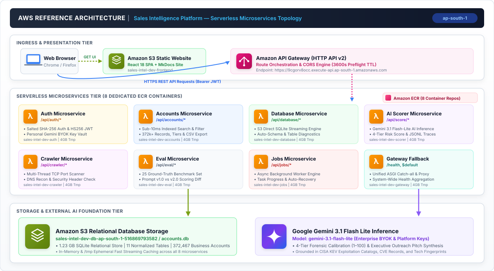

Sales Intelligence Platform¶
AI-Native B2B Cybersecurity Prospecting & Attack Surface Intelligence
The Sales Intelligence Platform is an enterprise-grade cloud system designed to ingest external attack surface telemetry, index security exposures across 372,000+ business accounts and 1,000,000+ digital assets, and enable consultative sales outreach through calibrated Google Gemini LLM forensic risk scoring and autonomous reconnaissance.
1. Reference Architecture¶
This reference architecture illustrates a fully decoupled, event-driven Serverless Microservices Topology deployed on Amazon Web Services (AWS) in the Asia Pacific (Mumbai) region (ap-south-1). Each microservice is containerized in an independent Amazon ECR repository and executed via AWS Lambda behind Amazon API Gateway v2.

Key Architectural Characteristics¶
- Serverless Microservices Architecture: 8 independently scalable containerized AWS Lambda microservices orchestrated via Amazon API Gateway HTTP API v2 with automated zero-cost idle scaling and 4,096 MB provisioned ephemeral storage.
- Sub-10ms S3 Direct SQLite Engine: 1.23 GB relational database (
accounts.db) containing 372,467 business accounts, 11 normalized SQL tables, and full-text search indexes streamed directly from Amazon S3 with/tmpcaching. - Calibrated Gemini 3.1 Flash Lite Scoring: Multidimensional AI risk qualification (1–100), automated talking points, and tailored outreach pitch generation grounded in CISA KEV exploitation catalogs and CVE evidence.
- Enterprise Session Security & BYOK Vault: Salted SHA-256 password hashing, 7-day HS256 JWT bearer authentication, and encrypted personal Google Gemini API key vault per sales representative.
- Autonomous Web Crawler & Recon: Multi-threaded web probing with TCP port scanning (80, 443, 8080, 8443, 9200), HTTP security header inspection, DNS resolution, and automated relational database upserts.
- Developer Benchmark Suite: Versioned prompt registry (
v1.0,v2.0), structured JSONL tracing, and a 25-case ground-truth evaluation harness measuring precision, recall, and MAE deltas.
2. Decoupled Microservice Topology¶
Each domain within the platform is isolated into a standalone microservice with dedicated dependencies, Dockerfile, and entrypoint handler:
| Microservice | Function Name | Route Ingress | Container Image (ECR) | Core Responsibilities |
|---|---|---|---|---|
| Auth | sales-intel-dev-auth |
/api/auth/* |
.../sales-intel-dev-auth:latest |
User registration, salted SHA-256 login, JWT generation, BYOK key vault. |
| Accounts | sales-intel-dev-accounts |
/api/accounts/* |
.../sales-intel-dev-accounts:latest |
372k+ account queries, full-text search, tier filtering, CSV exports. |
| Database | sales-intel-dev-database |
/api/database/* |
.../sales-intel-dev-database:latest |
S3 direct storage streaming, schema migrations, engine health diagnostics. |
| AI Scorer | sales-intel-dev-scorer |
/api/score/* |
.../sales-intel-dev-scorer:latest |
Gemini 3.1 Flash Lite inference, 4-tier calibration, JSONL traces. |
| Crawler | sales-intel-dev-crawler |
/api/crawler/* |
.../sales-intel-dev-crawler:latest |
Autonomous multi-threaded network probing, TCP port inspection, DNS recon. |
| Eval | sales-intel-dev-eval |
/api/eval/* |
.../sales-intel-dev-eval:latest |
25 ground-truth benchmark suite, prompt regression testing (v1.0 vs v2.0). |
| Jobs | sales-intel-dev-jobs |
/api/jobs/* |
.../sales-intel-dev-jobs:latest |
Asynchronous background worker queue, batch scoring progress tracking. |
| Gateway | sales-intel-dev-gateway |
/health, $default |
.../sales-intel-dev-gateway:latest |
Unified FastAPI ASGI router fallback and platform health aggregation. |
3. Hybrid Storage Architecture & Data Flow¶
The platform utilizes a Hybrid Database Engine combining the sub-10ms full-text search and zero idle costs of Amazon S3 Direct SQLite with the real-time durability and cross-container consistency of Amazon DynamoDB On-Demand:
flowchart TD
subgraph ClientLayer ["Client Layer"]
SPA["React 19 SPA (Sales Intelligence Workspace)"]
end
subgraph APIGatewayLayer ["AWS API Gateway v2"]
APIGW["HTTP API Gateway (ap-south-1)"]
end
subgraph LambdaLayer ["Serverless Microservices Layer (AWS Lambda)"]
AuthLambda["sales-intel-dev-auth"]
ScorerLambda["sales-intel-dev-scorer"]
CrawlerLambda["sales-intel-dev-crawler"]
AccountsLambda["sales-intel-dev-accounts"]
JobsLambda["sales-intel-dev-jobs"]
end
subgraph StorageLayer ["Hybrid Storage Layer"]
subgraph StaticCatalog ["Static Relational Catalog (Read-Optimized)"]
S3["Amazon S3 (accounts.db 1.23GB)"]
TmpCache["Lambda Ephemeral Cache (/tmp/accounts.db)"]
end
subgraph DynamicState ["Dynamic State Layer (Write-Optimized)"]
DDB_Users[("DynamoDB: sales-intel-dev-users")]
DDB_Scores[("DynamoDB: sales-intel-dev-ai-scores")]
DDB_Jobs[("DynamoDB: sales-intel-dev-jobs")]
DDB_Delta[("DynamoDB: sales-intel-dev-crawled-accounts")]
end
end
SPA --> APIGW
APIGW --> AuthLambda
APIGW --> ScorerLambda
APIGW --> CrawlerLambda
APIGW --> AccountsLambda
APIGW --> JobsLambda
%% Static Read Flows
S3 -.-> TmpCache
AccountsLambda --> TmpCache
ScorerLambda --> TmpCache
%% Dynamic Write & Read Flows
AuthLambda <--> DDB_Users
ScorerLambda --> DDB_Scores
JobsLambda <--> DDB_Jobs
CrawlerLambda --> DDB_Delta
AccountsLambda -.-> DDB_DeltaStorage Layer Partitioning & SLA¶
| Data Entity | Storage Engine | Access Pattern | Partition / Index Key | Latency SLA |
|---|---|---|---|---|
| 372k Account Catalog | S3 Direct SQLite (/tmp) |
Read-heavy, FTS5 Search, B-Tree Tier Filters | account_key, priority_tier, FTS |
< 10ms |
| 1M+ Assets & Ports | S3 Direct SQLite (/tmp) |
Relational JOIN on account_id |
Foreign Key B-Tree Index | < 10ms |
| Users & BYOK Vault | Amazon DynamoDB | Key-Value CRUD, Fast Login Verification | PK: email, GSI: id |
< 5ms |
| AI Score History | Amazon DynamoDB | Chronological Audit Log per Account | PK: account_key, SK: created_at |
< 5ms |
| Background Jobs | Amazon DynamoDB | Real-time Polling & State Machine | PK: job_id |
< 3ms |
| Crawled Accounts Delta | Amazon DynamoDB | Live Recon Ingestion & Unified Search | PK: account_key |
< 5ms |
4. Database Operations Flowcharts¶
4.1. Hybrid Read Operation Lifecycle¶
flowchart TD
Start(["Incoming Search Request: GET /api/accounts/search?q=example"]) --> CheckCache{"Is /tmp/accounts.db present in container?"}
CheckCache -- "No (Cold Boot)" --> S3Download["Stream accounts.db from S3 to /tmp/accounts.db"]
S3Download --> OpenSQLite["Open SQLite connection with WAL mode"]
CheckCache -- "Yes (Warm Container)" --> OpenSQLite
OpenSQLite --> ForkRead["Execute Parallel Queries"]
ForkRead --> ReadCatalog["Query Local SQLite /tmp<br/>- Full-Text Search FTS5<br/>- Relational JOINs on 1M+ assets"]
ForkRead --> ReadDynamo["Query DynamoDB crawled-accounts<br/>- Scan and Match live crawled discoveries"]
ReadCatalog --> JoinResults["Aggregator and Deduplicator<br/>- Merge static catalog with dynamic crawled delta"]
ReadDynamo --> JoinResults
JoinResults --> FormatOutput["Serialize JSON Response (< 15ms total latency)"]
FormatOutput --> EndRead(["Return Unified Results to Client"])4.2. Hybrid Write Operation Lifecycle¶
flowchart TD
StartWrite(["Incoming Write Request (Auth, AI Scorer, Job Queue, Crawler)"]) --> RouteOp{"Determine Target Entity"}
RouteOp -- "User Signup / BYOK" --> DynamoUser["DynamoDB: sales-intel-dev-users<br/>- PutItem (PK: email)<br/>- Store Salt, Hash and Encrypted Key"]
RouteOp -- "AI Score Generation" --> DynamoScore["DynamoDB: sales-intel-dev-ai-scores<br/>- PutItem (PK: account_key, SK: timestamp)<br/>- Store full scoring reasoning & token metrics"]
RouteOp -- "Job State Change" --> DynamoJob["DynamoDB: sales-intel-dev-jobs<br/>- UpdateItem (PK: job_id)<br/>- Atomic status change (QUEUED to COMPLETED)"]
RouteOp -- "Crawler Recon" --> DynamoCrawl["DynamoDB: sales-intel-dev-crawled-accounts<br/>- PutItem (PK: account_key)<br/>- Store discovered ports, assets & signals"]
DynamoUser --> AckWrite["Instant Global Consistency & Durability Guaranteed"]
DynamoScore --> AckWrite
DynamoJob --> AckWrite
DynamoCrawl --> AckWrite
AckWrite --> EndWrite(["Return Success Response (200 OK) to Client"])5. User Flows & Execution Sequences¶
Flow 1: Enterprise JWT Authentication & BYOK Vault (DynamoDB)¶
sequenceDiagram
autonumber
actor User as Sales Rep
participant UI as React Frontend (AuthPage)
participant APIGW as API Gateway v2
participant Auth as Auth Microservice
participant DynamoDB as DynamoDB (sales-intel-dev-users)
User->>UI: Enter Work Email & Password
UI->>APIGW: POST /api/auth/signin (JSON Payload)
APIGW->>Auth: Forward to sales-intel-dev-auth
Auth->>DynamoDB: GetItem (PK: email)
DynamoDB-->>Auth: Return Password Hash & Salt
Auth->>Auth: Verify Salted SHA-256 Hash
Auth->>Auth: Mint HS256 JWT Token (7-day validity)
Auth-->>APIGW: 200 OK with Bearer Token & User Profile
APIGW-->>UI: Return JWT Token (with CORS Headers)
UI->>UI: Store Token in localStorage & Navigate to WorkspaceFlow 2: On-Demand AI Forensic Scoring & History Audit (Hybrid)¶
sequenceDiagram
autonumber
actor User as Sales Rep
participant UI as Account Detail Drilldown
participant APIGW as API Gateway v2
participant Scorer as AI Scorer Microservice
participant Gemini as Google Gemini 3.1 Flash Lite
participant SQLite as Local SQLite (/tmp/accounts.db)
participant DynamoDB as DynamoDB (sales-intel-dev-ai-scores)
User->>UI: Click "Score with AI" on Target Account
UI->>APIGW: POST /api/score [Bearer JWT, Account Key]
APIGW->>Scorer: Forward to sales-intel-dev-scorer
Scorer->>SQLite: Fetch Account Assets, Ports & CISA KEV Signals
Scorer->>Scorer: Format Prompt Rubric with Evidence
Scorer->>Gemini: generate_content(gemini-3.1-flash-lite, JSON_Schema)
Gemini-->>Scorer: Score (1-100), Priority Tier, Talking Points & Pitch
Scorer->>DynamoDB: PutItem (PK: account_key, SK: timestamp, Score Data)
Scorer-->>APIGW: AccountScore JSON Response
APIGW-->>UI: 200 OK
UI->>User: Render Score Gauge, Attack Surface Rationale & Outreach PitchFlow 3: Autonomous Web Crawler & Live Target Ingestion (Hybrid)¶
sequenceDiagram
autonumber
actor User as Security Engineer
participant UI as Crawler Dashboard
participant APIGW as API Gateway v2
participant Crawler as Crawler Microservice
participant Target as Target Domain (External)
participant DynamoDB as DynamoDB (sales-intel-dev-crawled-accounts)
User->>UI: Submit Target Domain (e.g. "targetcorp.com") & Scan Depth
UI->>APIGW: POST /api/crawler/run
APIGW->>Crawler: Forward to sales-intel-dev-crawler
Crawler->>Target: DNS Resolution & Subdomain Discovery
Crawler->>Target: Multi-port TCP Scan (80, 443, 8080, 8443, 9200)
Crawler->>Target: HTTP Banner & Security Header Inspection
Crawler->>DynamoDB: PutItem: account_key = "targetcorp.com", assets, signals
DynamoDB-->>Crawler: Write Confirmed (< 4ms)
Crawler-->>APIGW: 200 OK with Scan Telemetry
APIGW-->>UI: Render Attack Surface Topology & Signal Matrix5. REST API Reference Matrix¶
All endpoints are accessible through the central API Gateway base URL:
https://9cgorv8occ.execute-api.ap-south-1.amazonaws.com
| HTTP Method | Endpoint | Microservice | Auth | Description |
|---|---|---|---|---|
GET |
/health |
Gateway | None | System health check, active architecture, and account count. |
GET |
/documentation/ |
S3 / Gateway | None | Embedded interactive MkDocs architectural documentation. |
POST |
/api/auth/signup |
Auth | None | Register new enterprise account (email, password). |
POST |
/api/auth/signin |
Auth | None | Authenticate user and receive HS256 JWT Bearer token. |
GET |
/api/auth/me |
Auth | JWT | Get authenticated user profile and BYOK key status. |
POST |
/api/auth/api-key |
Auth | JWT | Securely save personal Google Gemini API key to BYOK vault. |
GET |
/api/accounts/summary |
Accounts | None | Platform KPI statistics, tier breakdown, and risk metrics. |
GET |
/api/accounts |
Accounts | None | Paginated account listing with tier and signal filters. |
GET |
/api/accounts/{account_key} |
Accounts | None | Account forensic drilldown, assets, signals, and latest score. |
GET |
/api/accounts/{account_key}/score-history |
Accounts | None | Full version history and chronological audit trail. |
GET |
/api/accounts/search?q={query} |
Accounts | None | Sub-10ms full-text search across domains and hostnames. |
GET |
/api/database/health |
Database | None | S3 Direct SQLite engine diagnostics, tables & storage size. |
POST |
/api/database/query |
Database | Admin | Execute managed SQL queries with safety and limit constraints. |
POST |
/api/score |
Scorer | JWT + Key | On-demand LLM forensic risk scoring and pitch synthesis. |
POST |
/api/score/batch |
Scorer | JWT + Key | Bulk scoring for targeted sales prospect lists. |
GET |
/api/scorer/stats |
Scorer | None | Observability metrics (total calls, tokens, latency, cost). |
POST |
/api/crawler/run |
Crawler | None | Execute live network recon scan against target domains. |
GET |
/api/crawler/jobs |
Crawler | None | List recent autonomous crawler discovery jobs. |
GET |
/api/eval/prompts |
Eval | None | List registered prompt templates and version history. |
POST |
/api/eval/run |
Eval | JWT + Key | Execute 25-case ground-truth benchmark evaluation harness. |
POST |
/api/eval/compare |
Eval | JWT + Key | Run side-by-side prompt version comparison. |
GET |
/api/jobs |
Jobs | None | List all active, queued, or completed background tasks. |
GET |
/api/jobs/{job_id} |
Jobs | None | Real-time progress tracking for async batch operations. |
6. Infrastructure as Code & Deployment Automation¶
The entire cloud infrastructure is defined declaratively in Python using Pulumi inside backend/src/services/infra/:
# Unified Build & Deployment Command
cd backend/src/services/infra
.\deploy.ps1 -Stack dev -AwsRegion ap-south-1
Automation Workflow¶
- Automated Resource Provisioning: Provisions S3 database and website buckets, 8 dedicated ECR repositories, API Gateway HTTP API v2 with global CORS, and IAM execution roles.
- Dedicated Docker Builds: Builds independent container images for each microservice using Docker Buildx and pushes to Amazon ECR.
- Lambda Code Update: Updates each AWS Lambda function code and configures 4GB
/tmpephemeral storage and 2GB RAM. - Data Synchronization: Streams
accounts.db(1.23 GB) directly to the S3 database bucket. - Frontend & Documentation Build: Compiles the React SPA (
npm run build) and MkDocs site (mkdocs build) and synchronizes static assets to S3 website hosting.